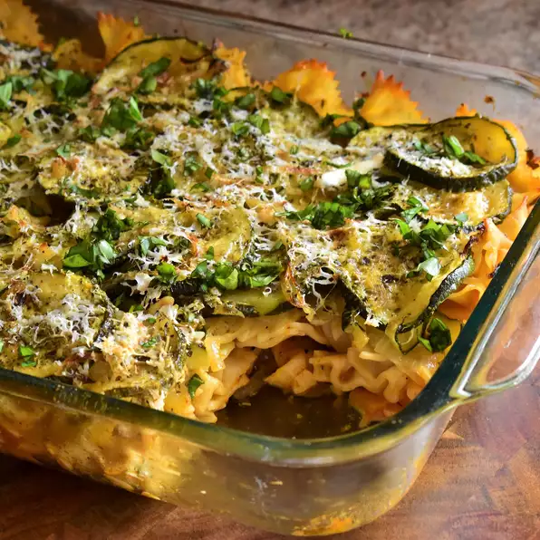

Roasted Zucchini Casserole

Ingredients (unordered)
- 3 medium zucchinis (sliced)
- 2 medium onions (sliced)
- 3 tablespoons olive oil
- Salt and ground black pepper to taste
- One 16 ounce package penne pasta
- One 28 ounce jar marinara sauce
- 1/2 cup grated parmesan cheese
Steps (ordered)
Step: 1
- FPreheat oven to 400 degrees F (200 degrees C).
Step: 2
- Toss zucchinis and onions in a large bowl with olive oil until evenly coated. Spread vegetables into a large baking dish.
Step: 3
- Roast vegetables in the preheated oven until golden, about 30 minutes. Season with salt and pepper. Reduce oven heat to 350 degrees F (175 degrees C).
Step: 4
- Fill a large pot with lightly salted water and bring to a boil. Stir in penne and return to a boil. Cook pasta uncovered, stirring occasionally, until cooked through but still firm to the bite, about 11 minutes; drain.
Step: 5
- Lightly grease a 9x13-inch baking dish.
Step: 6
- Heat marinara sauce in a saucepan over medium heat until sauce is hot. Spread hot marinara sauce into the prepared baking dish, followed by penne pasta and zucchini mixture. Sprinkle Parmesan cheese atop vegetables.
Step: 7
- Bake in the preheated oven until sauce is bubbly, 35 to 40 minutes. Allow casserole to rest for 5 minutes before serving.
Odin Recipes